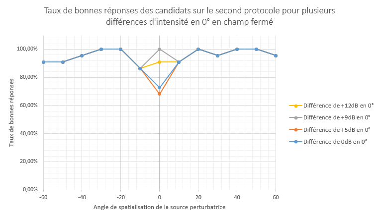
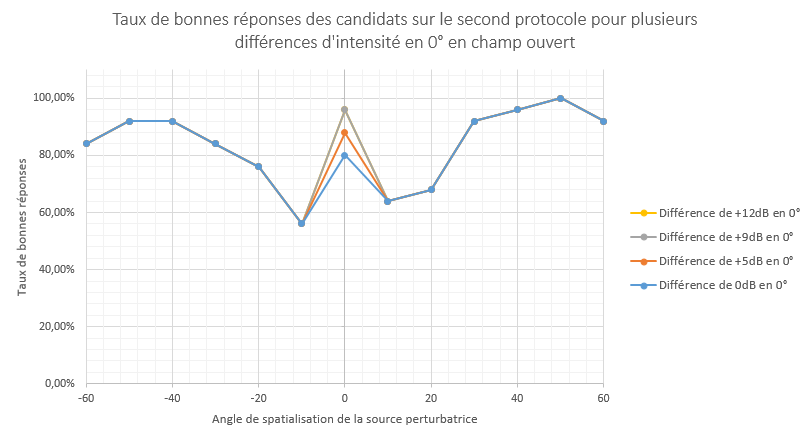

Il est important de remarquer qu’en 0° lorsque la différence d’intensité passe de 9dB à 12dB cela détériore les résultats (5% de bonnes réponses en moins). Cela peut cependant être dû aux réponses sur ces tests qui ne sont pas exactement les mêmes.
En champ fermé la valeur d’angle limite est différente à droite d’à gauche. Il faut compter au minimum 20° lorsque la source perturbatrice est à droite pour avoir une différentiation suffisamment aisée. S’éloigner de cette valeur n’a ensuite pas beaucoup d’impact. Lorsque la source perturbatrice est à gauche il est préférable d’avoir un angle proche de -20°. En effet à partir de -30° la distinction est plus difficile.

On peut voir que lorsque la différence de décibels augmente en 0°, le taux de bonnes réponses augmente. Cependant une différence de +12dB ne donne pas de meilleurs résultats qu’une différence de +9dB, tout comme en champ fermé, la différence de 9db entre source cible et source perturbatrice en 0° semble la plus optimale.
Les valeurs minimales des angles pour avoir une distinction efficace des sources cible et perturbatrice semble être de +/- 20°.
Pour avoir une meilleure précision sur ces résultats, il serait intéressant d’effectuer de nouveau ces tests avec un pas plus petit, de l’ordre de 2°.